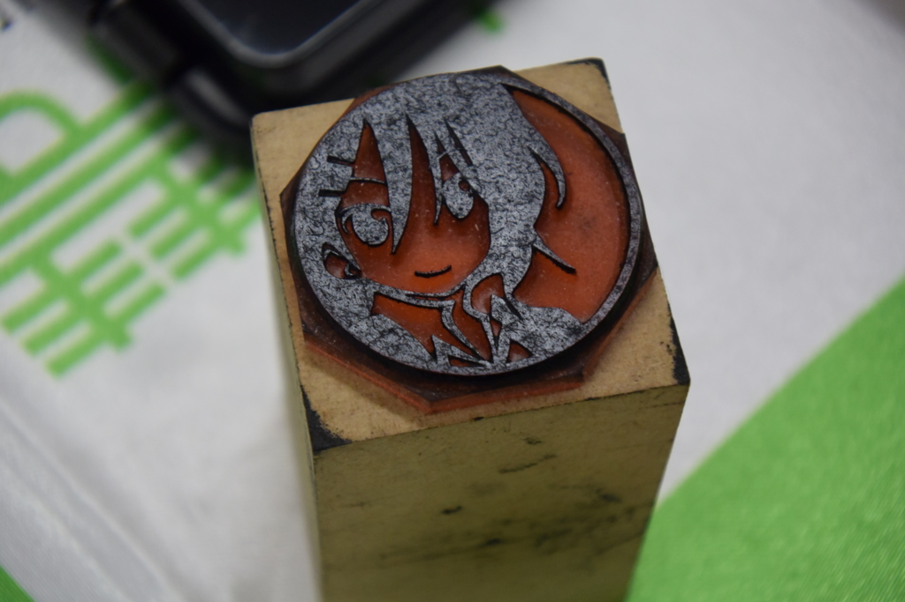
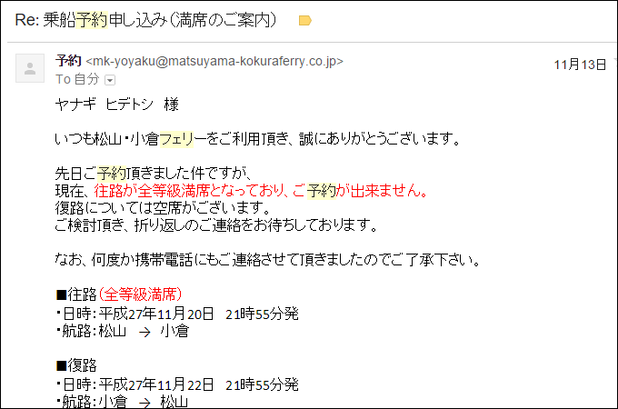
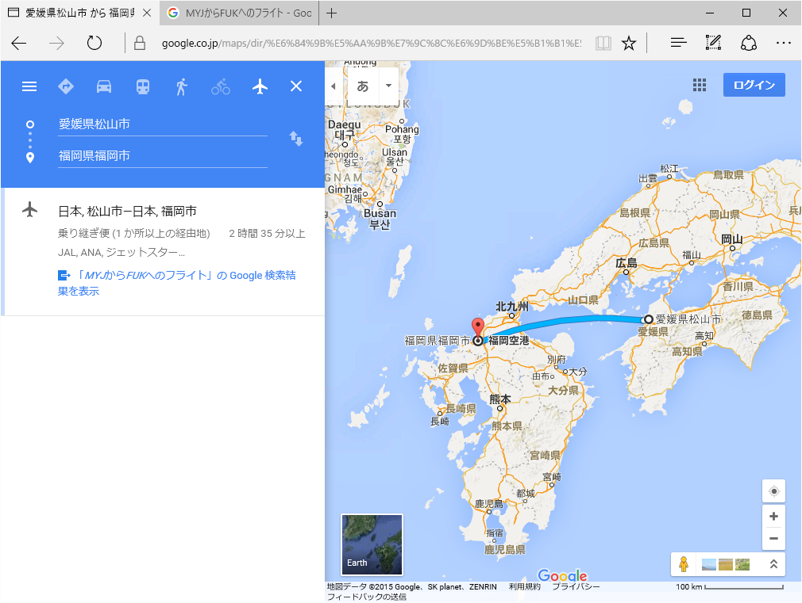
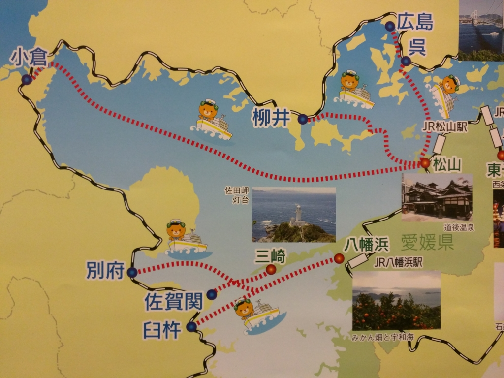
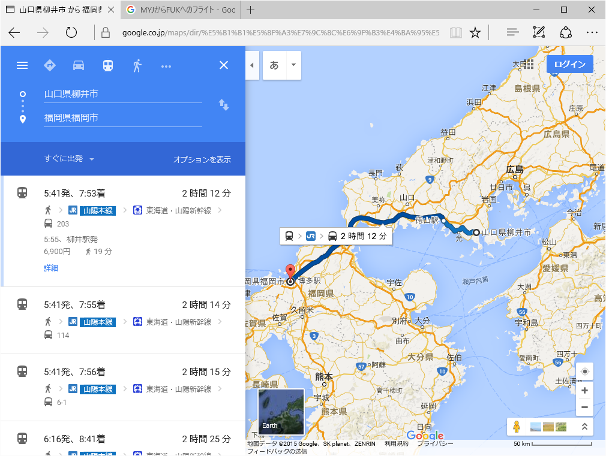
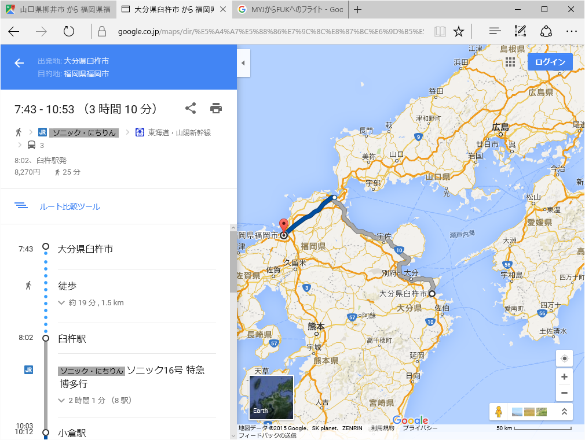

福岡その一：愛媛・松山から福岡までのルート選定。飛行機から謎ルートまで
公開日：

「修羅イバー」の異名を持つ はまもつ（@airish9）氏 の尽力でプロ生＠福岡が緊急開催されたので、11月の終わり辺りに出撃してきた。
愛媛から福岡へは、フェリーが断然安くて便利。小倉発着なので博多までは電車になるが、新幹線で一駅なので楽ちん――と思いきや。

ｱｯ━━━━(ﾟ∀ﾟ)━━━━!!
ついでに宿もとれない。修羅イバーから与えられし試練、厳しすぎる。宿はとりあえずキャンセル待ちを狙うことにして、代わりのルートを検討せねばならぬ。
ルートの検討
その一：空路

一番手っ取り早いけど、旅割りが効かないので普通運賃（25,800円）×2≒5万円 を払う必要がある。
（フェリーの二等寝台（7,710円）＋新幹線（2,110円））×2≒2万円 と比べると割高感が否めない。最悪、行きだけ飛行機というのはアリか（あとから考えると、それが最適解だった）。
その二：鉄道＋海路

リーズナブルに行きたいならば、瀬戸内の回路を活用しない手はあるまい。松山からの場合、クルマの利用を考えないと、
- 松山観光港 → 呉・広島 → 博多
- 三津港 → 柳井 → 博多
- 松山駅 → 八幡浜 → 臼杵・別府 → 博多
の4パターンが選べる。広島ルート（接続さえ良ければ、呉で電車に乗ったほうが楽そうだが）は少し遠回りなので除外するとして、下の2ルートは割と現実的な気もする。
柳井ルート

海の国道なので、夜でも運航しているのがメリット。三津港の居酒屋で飲んだあと、夜の便に乗るというのもオツかも。
この航路は途中の伊保田までだが乗ったことがある。
フェリー（3,600円、2.5時間）＋在来線・新幹線（10,450円、2.5時間）＝14,000円。
新幹線へは徳山駅で乗り換えるようだ。
八幡浜 → 臼杵・別府ルート

大分を回るルート。臼杵行きの深夜便に乗ると、朝まで船内休憩できる。JR九州の特急ソニックに乗れるのも面白そう（在来線特急では日本で2番目に速い。ちなみに一位は大阪と北陸を結ぶサンダーバード）。
八幡浜までの運賃（2,780円、1.5時間）＋フェリー（二等：2,310円、2.5時間）＋臼杵からの運賃（8,270円、3.5時間）＝14,000円。
柳井ルートよりは気持ち安めだけど、乗り換えが多い点、駅と港の間を歩く点を考えればかなり分が悪い。
ルートその三：鉄道＋バス
バスを利用すれば
- 松山駅 →（しまなみ海道） → 尾道駅・福山駅 → 博多
というルートもある。今回はなんとなく見送ったが（基本的にバスが好きではない）、これも有力だったかもしれない。
福山までのバス（3時間、3,900円）＋新幹線（2.5時間、10,670円）＝15,000円。
一日4本とバスの本数に限りがあるので注意したいかも。あと、あんまりないと思うけど交通事情によっては遅れがあるかも。時間が読めないのは少し不安かな。
ルートその四：高速バス
嫌いなので割愛。
結論
まとめるとこんな感じか。
| ルート | 運賃 | 所要時間 | ポイント |
| 飛行機 | 2.5万円 | 1時間 | 旅割りが効くなら文句なくコレだけど、直前だとキツい |
| 小倉フェリー | 1万円 | 夜出て朝着 | 楽ちんだけど予約できなかった |
| 防予フェリー（柳井ルート） | 1.4万円 | 最短で6時間 | 夜中でも船が出ている |
| 豊予フェリー（臼杵ルート） | 1.4万円 | おそらく9時間弱 | 深夜便だと船内休憩あり |
| キララエキスプレス（しまなみ海道） | 1.5万円 | 最短で6時間 | バスがネックだが、新幹線との接続よし |
| 高速バス | - | - | 探せばあるんだろうが、あんまり好きじゃないので選択肢に入れない |
小倉フェリーが一番よいが、片道だけなら飛行機も悪くない。1万余分に払うことになるが、何しろ楽だ。次点で防予フェリーとキララエキスプレスだが、これは趣味で選べばよさそうだ。自分だったら船だけど、乗り換えの少ないキララエキスプレスも魅力ではある。
――で。
そこまで考えてなんだけど、結局、一番しんどそうな臼杵ルートを選択した。理由はやってみたかったから。人類の探求心は留まるところを知らんね。実際どうだったかは、また今度。